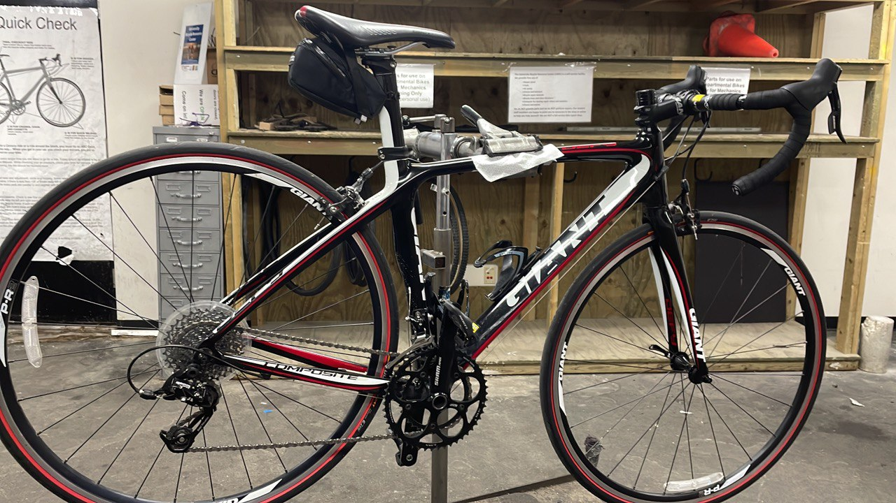
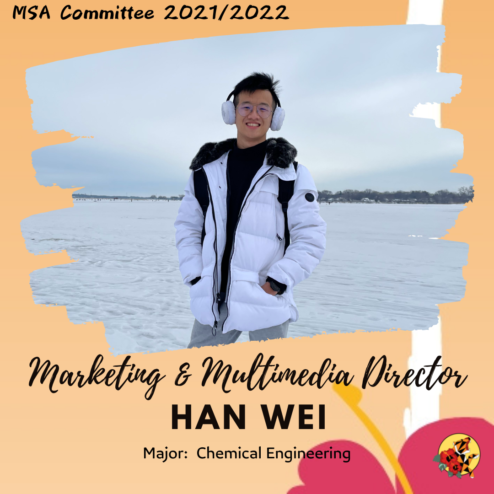
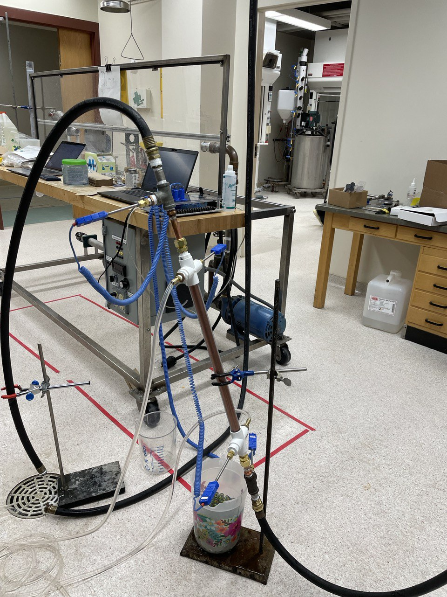

Experience
My working, leadership, and project experience, and involement in organizations.
Work experience
- Bike Mechanic | University Bike Resource Center (Sep.2021 - Present)
- Assist and teach visitors with bike repair and maintenance procedures.
- Encourage the use of active forms of transportation, especially bicycling, walking, and transit.
- Dining Team Member and Caterer | Wisconsin Union (Apr. 2021 – Aug. 2021)
- Introduced menu items to customers and dealt with their inquiries and complaints.
- Followed tight SOP in food preparation.
- Observed and learned how the management teams improved the flow of food preparations.
- Customer Service and Order Management Executive (Dec. 2018 – Apr. 2019) |
EveryThink Online Store, Malaysia
- Helped customers with product selection, troubleshooting and warranties, parcel tracking, lost parcels, complaints, and inquiries.
- Promoted products through Facebook live, Facebook Business Page, and phone calls.
- Handled the sales process from accepting orders to packaging and delivering parcels.
Organizations
- Member of Badminton Club | University of Wisconsin-Madison (Aug. 2022 – Present)
- Attend club trainings twice weekly and participate in midwest badminton tournaments.
- Marketing & Multimedia Director (June. 2021 – May. 2022)
Malaysian Student Association (MSA) | University of Wisconsin-Madison
- Created content to market MSA events through social media platforms.
- Vice President (Jan. 2017 – Dec. 2017)
Basketball Club | Sultan Ismail 2 High School, Malaysia
- Planned games and training activities for club members.
Projects
- Study of Heat Transfer Between Two Liquid Streams under Laminar Flow
- Engineering Economic Analysis About Whether to Buy or Lease a Car as a UW Madison Student
- Write MATLAB's Function to Solve Mathematical Equations via Newton's Method, Euler's Method and Midpoint Rule
- Write MATLAB's Program for Engineering Unit Conversion
- Write Technical Review on Desalination Processes Integrated with Renewable Energies to Purify Water Off the Grid in Developing Countries with Adequate Sunlight
- Write Indepedent Research Paper about Whether K-12 and Universities in The United States Should Teach Financial Literacy
- Market Segmenting, Designing and Selling T-Shirts
- Introducing Correlative and Predictive Thermodynamics Activity Model to Non-scientific Reader
- Isomerization of Alpha and Beta Acids into Bittering Agents Found in Beer (Project Lab)
- Design and Recommend a Process For Production of 21500 Metric Tons Per Year of Methanol from Carbon Dioxide and Hydrogen


